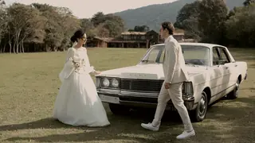

- Prod
- Your wedding
- Roll
- A001
- Scene
- The whole day
- Take
- 1, and only
You only get one take.
Wedding films in Singapore. Two of us film every full day, every vow is recorded on two cameras, and the prices are on this page before you ever call us.
Films, not footage.
The film behind this page is one of ours: a garden wedding, cut down to thirty-four seconds. The full one runs six minutes and ten seconds. We make about thirty a year, one wedding a day and never two, so the people who filmed your morning are the ones who edit your night.
-

The garden, all day
Full Day · 6:10 · two shooters
-
Sunflowers at dusk
Full Day · 4:48 · two shooters
-
Forehead to forehead
Same-Day Edit · 7:20 · three shooters
-
Out the chapel doors
Full Day · 5:05 · two shooters
How a day is covered.
This is the day behind the film you are scrolling: a garden wedding, eleven hours, two of us. Every shot on this page comes from it, in the order it happened. Here is where each of us stood.
The dress, before anyone is up
A hangs it where the morning light falls and films it first, while the room is still quiet.
Both sides get ready
A with the bride at the shutters, B with the groom at the window across the yard. Neither sees the other.
The first look
B hidden behind the arch, A wide on the lawn. Ten seconds, filmed from both sides.
The walk to the aisle
A behind the bride and her father, B at the front facing them. The vows get both angles and two microphones.
Out through the petals
B walks backwards ahead of the couple; A stays on the guests throwing.
Lunch and the toasts
Every toast filmed facing the person who gives it.
The car, and away
Twenty minutes of portraits, then the last shot through the back window.
A Singapore day runs longer and starts earlier: a 6:30 make-up call, the gatecrash at the door, a tea ceremony in each family's home, solemnisation, then the banquet's march-in and yam seng. We cover it the same way, one camera wide and one close, and build the shot plan from your own order of events.
Nothing gets filmed twice, so everything is recorded twice.
The shot behind this list happened once, in about ten seconds, with nobody saying a word. Most of a wedding is like that. Here is what stands between it and a missed moment.
- Two cameras on every vow, ring and kiss. If an uncle with a tablet steps into one, the other is still clear.
- Two cards in every camera. Each one writes the same footage to both, at the same time.
- Sound twice. A lapel microphone on the groom and a recorder at the solemniser's table, in case one is knocked or muffled.
- Two drives the same night. Each shooter takes one copy home. The cards are not wiped until your film is delivered.
- A third shooter on call for every date. If one of us falls ill, that call is made at six in the morning, by us, not by you.
What it costs.
Three ways to book us, priced as ranges because a Tuesday solemnisation in one room is not a Saturday in two hotels. The low end is a weekday at one venue; the high end is a peak-season Saturday or a second location. You get the exact number in writing before you pay anything.
| Detail | Solemnisation | Full DayMost couples book this | Full Day + Same-Day Edit |
|---|---|---|---|
| Price | S$1,480 – 1,980 | S$3,680 – 4,580 | S$5,880 – 6,880 |
| Hours on the day | Up to 4 | Up to 12 | Up to 14 |
| On the day | 1 shooter | 2 shooters | 3 shooters and an editor |
| Your film | 3 minutes | 5 to 7 minutes | 5 to 7 minutes |
| Full-length edits | The solemnisation | Tea ceremony, solemnisation, march-in and speeches | All of Full Day |
| Shown at dinner | — | — | A 3-minute film of that morning, cut on site |
| Arrives | In 4 weeks | In 8 weeks | That night, then 8 weeks |
-
Solemnisation
S$1,480 – 1,980
- Hours
- Up to 4, one shooter
- Your film
- 3 minutes, plus the solemnisation in full
- Arrives
- In 4 weeks
-
Full Day Most couples book this
S$3,680 – 4,580
- Hours
- Up to 12, two shooters
- Your film
- 5 to 7 minutes, plus tea ceremony, solemnisation, march-in and speeches in full
- Arrives
- In 8 weeks
-
Full Day + Same-Day Edit
S$5,880 – 6,880
- Hours
- Up to 14, three shooters and an editor
- Your film
- All of Full Day, and a 3-minute film of that morning shown at dinner
- Arrives
- That night, then 8 weeks
A 30% deposit holds your date; the balance is due a week before the wedding. Drone footage, where the venue and CAAS rules allow it, adds S$380. A second day, such as a church ceremony and a banquet a week apart, is quoted as one booking.
When your film arrives.
Couples ask this more than anything else, usually around week five. So here are the dates, counted from your wedding day.
- That nightThe same-day edit plays at dinner, if you booked one.
- Day 7A 60-second teaser, cut vertical for your phone.
- Week 4The full solemnisation, start to finish.
- Week 8Your film and every full-length edit, in 4K, by private link and download.
- Week 10One round of changes, included: music, order, a moment you want back in.
- Two yearsHow long we keep every raw clip. Ask any time.
Check your date.
We take one wedding a day, so the first question is always the date. Tell us that and a little about the day; we reply within one working day with a yes or a no, and the exact price if it is yes.